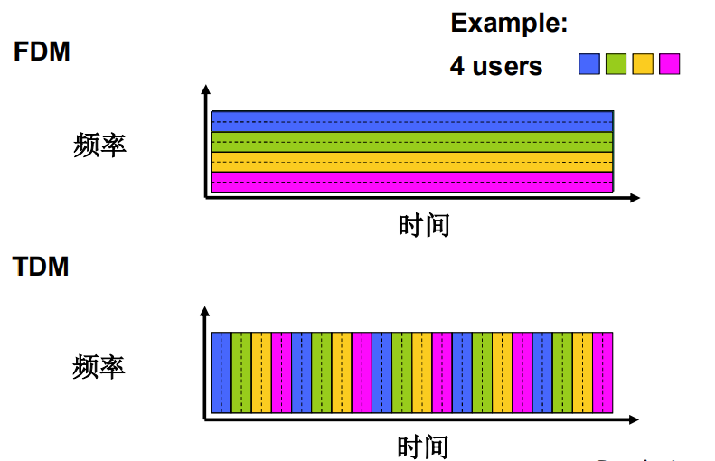

计算机网络和因特网¶
约 2134 个字 1 张图片 预计阅读时间 14 分钟
1.1 什么是因特网¶
从具体构成角度¶
- 节点
- 主机及其上运行的应用程序
- 路由器、交换机等网络交换设备
- 边：通信链路
- 接入网链路：主机连接到互联网的链路
- 主干链路：路由器间的链路
- 光纤、同轴电缆、无线电、卫星
- 传输速率：带宽(bps)
- 主机/端系统：
- 数以亿计的、互联的计算设备
- 运行网络应用程序
- 分组交换设备：转发分组
- 路由器和交换机
- 协议
- 协议定义了在两个或多个通信实体之间交换的报文格式和次序，以及在报文传输和/或接收或其他事件方面所采取的动作
- 分为各个层的协议
- TCP, IP, HTTP, FTP, PPP
端系统通过通信链路和分组交换机连接到一起。端系统通过因特网服务提供商（Internet Service Provider, ISP）接入因特网。
TCP 提供面向连接的通信服务，UDP 提供无连接的通信服务。
网络结构¶
- 网络边缘
- 主机
- 应用程序（客户端和服务器）
- 网络核心
- 互连着的路由器
- 网络的网络
- 接入网、物理媒体
- 有线或无线通信链路
1.2 网络边缘¶
- 端系统（主机）
- 运行应用程序
- 如 Web、email
- 在“网络的边缘”
- 客户/服务器（C/S）模式
- 客户端向服务器请求、接收服务
- 如 Web 浏览器/服务器，email 客户端/服务器
- 对等（peer-peer）模式
- 很少（甚至没有）专门的服务器
- 如 Gnutella, KaZaA, Emule
采用网络设施的面向连接服务¶
握手：在数据传输之前做好准备
TCP - 传输控制协议
- 可靠地、按顺序地传送数据
- 确认和重传
- 流量控制
- 发送方不会淹没接收方
- 带宽大则可要求发送速率快，反之亦然
- 拥塞控制
- 当网络拥塞时，发送方降低发送速率
应用：HTTP（Web），FTP（文件传送），Telnet（远程登录），SMTP（email）
采用基础设施的无连接服务¶
UDP - 用户数据报协议
- 无连接
- 不可靠数据传输
- 无流量控制
- 无拥塞控制
应用：流媒体、远程会议、DNS、Internet 电话
1.3 网络核心¶
- 网络核心：路由器的网状网络
数据怎么通过网络进行传输？
- 电路交换
- 为每一个呼叫预留一条专有电路：如电话网
- 分组交换
- 将要传输的数据分为一个个单位
电路交换¶
电路交换（Circuit Switching）是一种传统的网络通信方式，其主要特点和机制如下：
- 为每个呼叫预留一条专有电路
- 类似于传统电话系统，在通信开始前需要先建立一条端到端的物理连接线路。
- 端到端资源独占
- 呼叫一旦建立，通信过程中所占用的链路带宽和交换能力都是独占的，不与其他通信共享资源。
- 资源预分配
- 在通信之前，系统为该呼叫预留“端到端”资源（链路带宽 + 交换节点能力）。
- 保证性能
- 一旦建立连接，通信的带宽和延迟可以得到保证，因为路径已经固定并专用。
- 若无数据发送，资源浪费
- 即使通话中暂时没有数据传输（如沉默时段），资源也被占用（无共享能力），导致效率低。
- 无分组操作
- 数据不需要被拆分成分组；数据在建立好的路径中连续传输。
电路交换的资源划分方式¶
网络资源（如带宽）被分成“片”（pieces），常见划分方式有：
- 频分复用 (FDM, Frequency-Division Multiplexing)
- 时分复用 (TDM, Time-Division Multiplexing)
- 波分复用 (WDM, Wave-Division Multiplexing)

例题
在一个电路交换网络上，从主机A到主机B发送一个640,000比特的文件需要多长时间？
- 所有的链路速率为 1.536 Mbps
- 每条链路使用时隙数为 24 的TDM
- 建立端-端的电路需 500 ms
每条链路的速率：1.536Mbps/24 = 64kbps
传输时间：640kb/64kps = 10s
共用时间：传输时间 + 建立链路时间 = 10s + 500ms = 10.5s
电路交换不适合计算机之间的通信¶
- 连接建立时间长
- 计算机之间的通信有突发性，如果使用线路交换，则浪费的片较多
- 即使这个呼叫没有数据传递，其所占据的片也不能够被别的呼叫使用
- 可靠性不高？
分组交换¶
工作方式¶
- 以分组为单位存储-转发方式
- 网络带宽资源不再分分为一个个片，传输时使用全部带宽
- 主机之间传输的数据被分为一个个分组
- 资源共享，按需使用
- 存储-转发：分组每次移动一跳
- 被传输到下一个链路之前，整个分组必须到达路由器：存储-转发
- 在一个速率为R bps的链路，一个长度为L bits 的分组的存储转发延时： L/R s
主要特点：¶
-
高效利用资源：
- 链路资源按需分配（不预留），多个通信可以共享链路带宽，称为“统计多路复用（statistical multiplexing）”。
-
灵活性强：
- 不需要提前建立端到端连接，通信灵活快速，适合计算机之间的突发通信。
-
存储-转发机制（Store-and-Forward）：
- 每个路由器在转发分组前，必须先完整接收整个分组，然后才转发到下一跳。
-
带来每跳传播延迟：
L/R秒，其中 -
L: 分组长度 (bits) R: 链路带宽 (bps)
分组交换的挑战：¶
-
排队延迟和丢包：
- 当到达的分组速率 > 输出链路速率，会产生排队。
- 若队列溢出，分组将被丢弃。
核心功能：¶
- 转发（Forwarding）：根据分组头部的目的地址，将其从输入端口发送到合适的输出端口。
- 路由（Routing）：确定分组到达目的地所经过的路径。
分组交换 vs. 电路交换
- 适合于对突发式数据传输
- 资源共享
- 简单，不必建立呼叫
- 过度使用会造成网络拥塞：分组延时和丢失
- 对可靠地数据传输需要协议来约束：拥塞控制
- Q: 怎样提供类似电路交换的服务？
- 保证音频/视频应用需要的带宽
- 一个仍未解决的问题(chapter 7)
数据报网络¶
- 每个分组（packet）独立路由，称为“数据报（datagram）”；
- 每个分组都带有完整的目的地址信息；
- 网络中每个路由器根据分组头部信息独立决定下一跳；
- 各个分组可能走不同路径，到达顺序可能变化。
| 特性 | 描述 |
|---|---|
| 路由方式 | 每个分组独立决策（根据目的地址） |
| 建立连接 | 不需要，直接发送 |
| 顺序保证 | 不保证分组按顺序到达 |
| 可靠性 | 网络层不负责可靠传输（靠上层协议如 TCP 实现） |
| 灵活性 | 高，适合突发、动态流量 |
| 代表协议 | IP 协议（Internet Protocol） |
虚电路网络¶
- 在传输数据前，先建立一条逻辑连接，称为“虚电路”（VC）；
- 分组传输过程中，都走相同路径，使用相同的虚电路编号；
- 每个路由器维护虚电路表，根据虚电路号转发。
| 特性 | 描述 |
|---|---|
| 路由方式 | 只需连接时选择一次路径，之后都走同一条 |
| 建立连接 | 必须先建立虚电路 |
| 顺序保证 | 所有分组按顺序到达 |
| 可靠性 | 可选择性支持 |
| 延迟 | 连接建立时高，但之后转发快（查表） |
| 代表协议 | ATM、Frame Relay、X.25、MPLS 等 |
虚电路网络 vs. 电路交换
| 项目 | 电路交换 | 虚电路网络（分组交换） |
|---|---|---|
| 🔌 是否建立连接 | ✅ 是 | ✅ 是 |
| 📦 是否拆分数据 | ❌ 不拆分，连续传输 | ✅ 拆分成分组，分组发送 |
| 🔁 路由方式 | 固定物理链路（物理路径） | 固定逻辑路径（通过标签或编号识别） |
| 💡 数据转发方式 | 物理电路直连 | 分组交换（每个分组通过查表转发） |
| 📉 带宽资源分配 | 独占（为呼叫预留带宽） | 共享（统计复用，不必预留带宽） |
| 🚫 空闲时资源浪费 | 是（没有数据也占用） | 否（无数据不占资源） |
| 📌 举例协议 | 电话交换网 | MPLS、ATM、Frame Relay 等 |